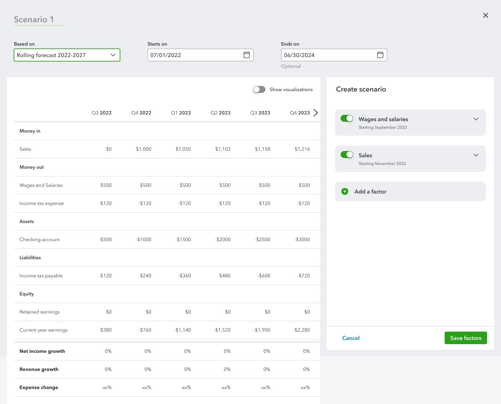
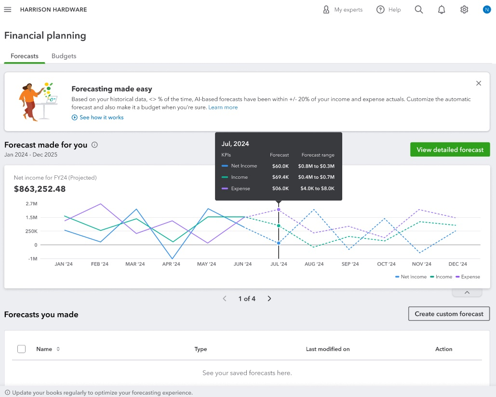
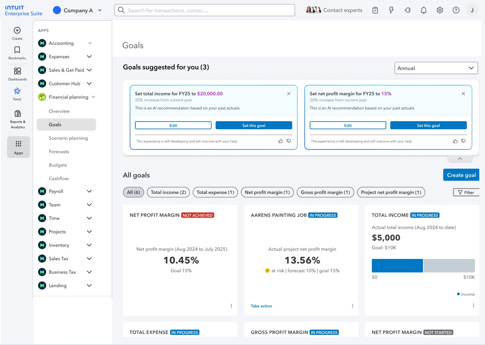
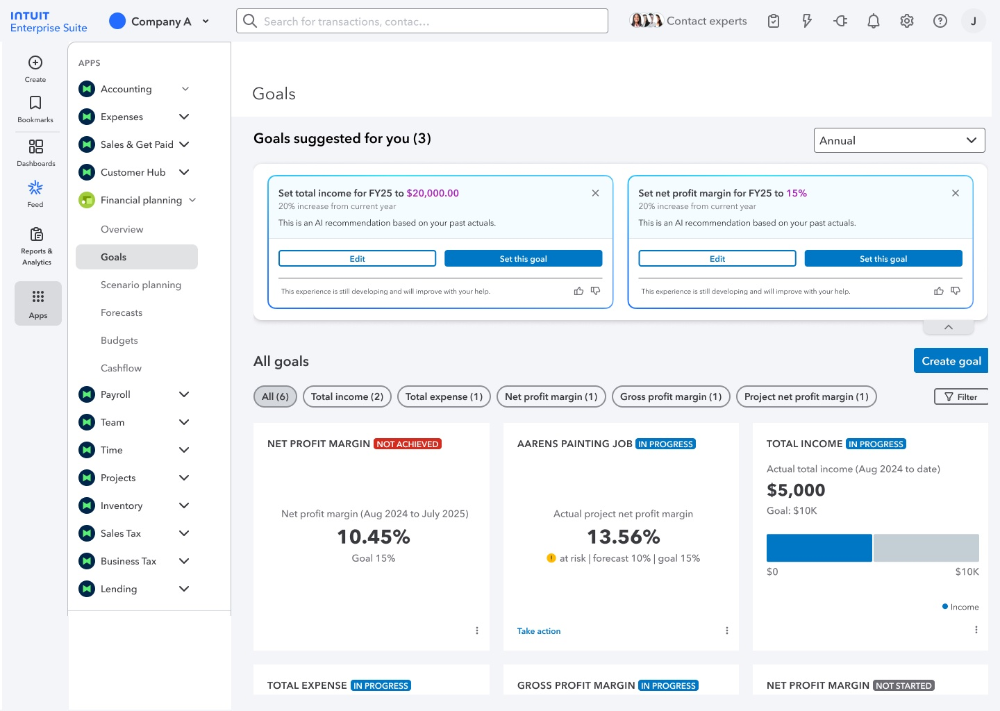
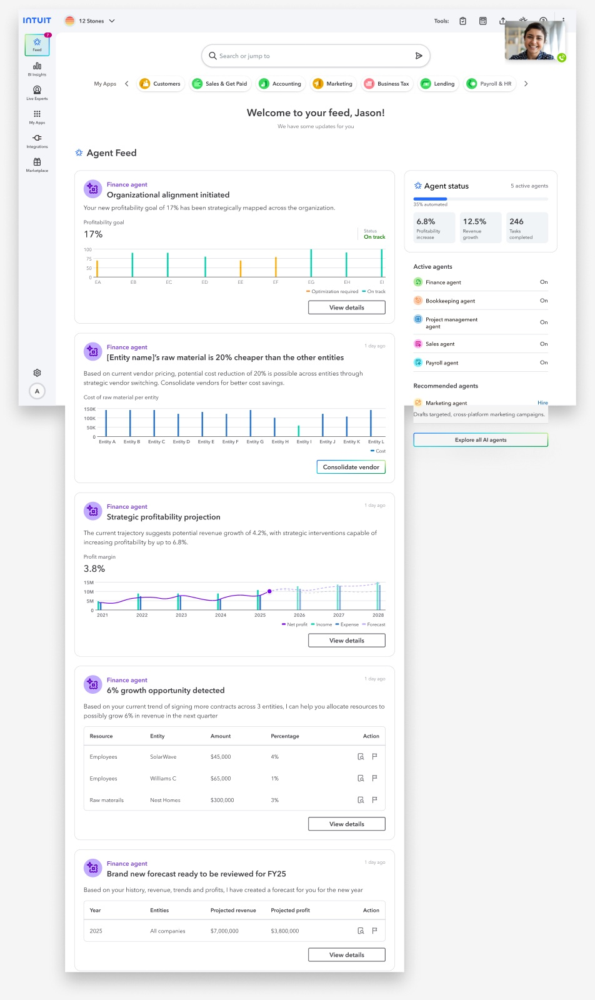
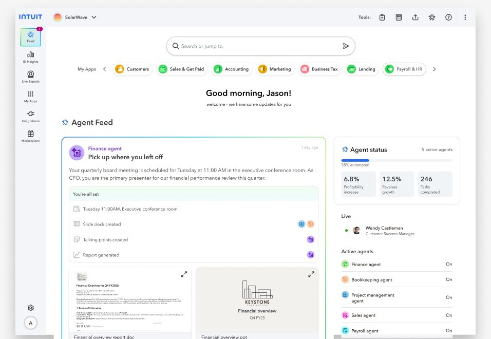
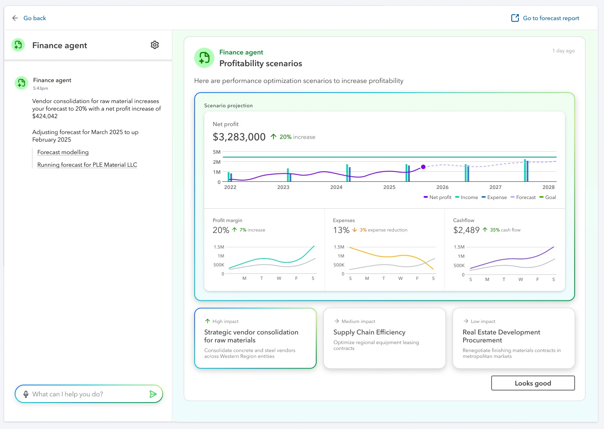
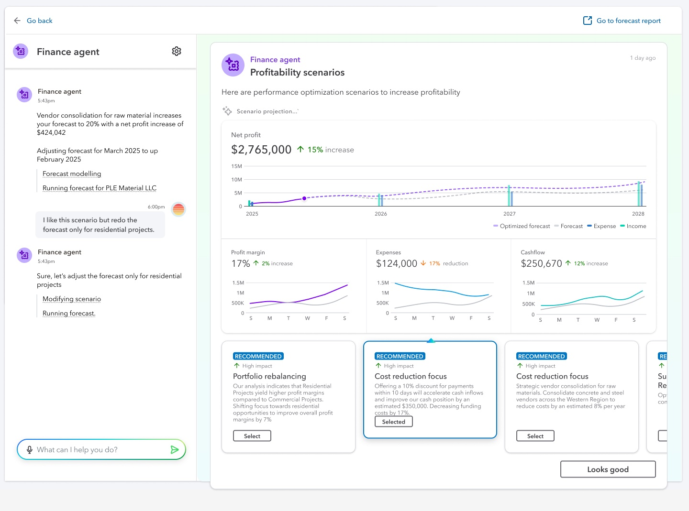
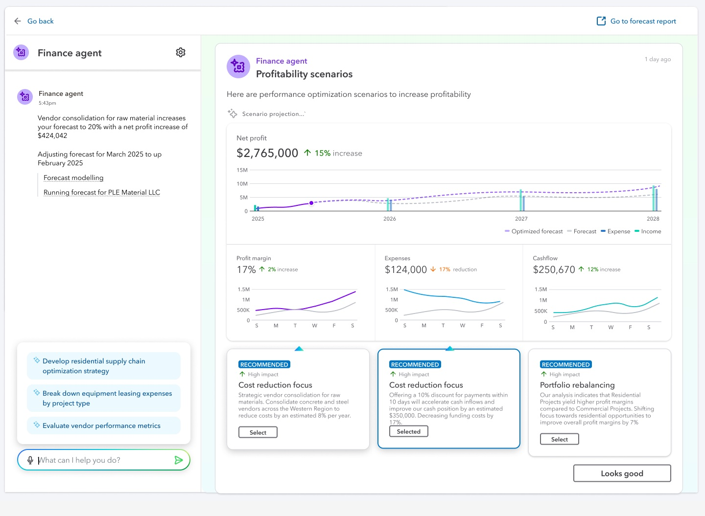

I came in as Head of Design for QuickBooks Desktop — and found a gap neither Desktop nor Online had addressed. This is how a migration mandate turned into a new product category, a customer repositioning, and the early architecture of Intuit Enterprise Suite.
My primary role at Intuit was Head of Design for QuickBooks Desktop — the on-premises product that had been the financial backbone for millions of businesses for decades. Alongside that, my mandate included helping migrate those users to QuickBooks Online, the cloud version. As I worked across both products, I started noticing something the migration roadmap hadn't fully addressed: the customer base wasn't uniform, and it was changing shape.
Small businesses were polarising. Some simplified into solo operators and side businesses; others added staff and complexity, edging toward miniature corporations. Both ends were underserved — neither had an integrated way to plan ahead. And QuickBooks Desktop's most mature customers, with real financial complexity, had no planning tool even in the product they were already paying for.
Between FY21–FY23, 850K QuickBooks Desktop customers migrated to Online — 28% of all QBO acquisitions. Feature parity sat at 45% by early FY23. The most financially complex customers were most at risk of churning, and the ecosystem had no answer for them.
The name I kept reaching for in early research was strategic avoidance. Owners know they should forecast and build scenarios. They defer because starting costs too much time and thought — and no tool in the ecosystem made starting easy. The result is financial knowledge debt: the business runs on gut feel until a crisis exposes the gap.
These came from two streams of discovery in the first months: my own conversations with mid-market owners and controllers, and the formal Foundational Study the QBDT research team ran — 9 depth interviews and a 73-person survey. The gap was clear before any design began.
The core positioning decision: extending reporting vs building planning-first. The distinction sounds simple; it determined every product decision that followed. Reporting describes what happened. Planning answers what's coming. No existing QuickBooks feature crossed that line.
The customer base wasn't a single profile. FY22 made the polarisation structural: inflationary pressure and supply chain disruption drove degrowth in the 2–50 employee middle, while solopreneurs expanded with the gig economy and mid-market companies that had survived the pandemic emerged more complex than before. The QB customer base was going hourglass — and the design opportunity sat at the upper end.
Mid-market businesses — $1M–$50M revenue, real financial complexity, no CFO infrastructure — were the target. Many were already QuickBooks Desktop customers. Mature, stable, loyal to on-premises software. A financial planning tool would serve them on either platform. That insight shaped the repositioning.
Segment map — QB customer universe with FY22 trend signals. The shrinking middle clarified the opportunity: not the stressed small business, but the expanding mid-market where complexity outgrows intuition.
The business-stage model added a temporal layer — and revealed a critical repositioning mid-project. We started by targeting businesses at the Finding Footing stage: 2–5 year old companies just establishing financial processes, hungry for cashflow visibility. Early research validated the pain. But as we went deeper, we realised the product's natural home was further along the maturity curve.
We repositioned toward Steady State and Expansion businesses — 5–10+ years old, established, genuinely complex. They had sharper planning needs and would pay for tools that met them. And they were exactly the mature businesses already running QuickBooks Desktop, so the tool could serve them on either platform. The repositioning didn't narrow the market; it deepened it.
Seven business stages — initial target (dashed, Finding Footing) vs repositioned target (solid, Steady State + Expansion). The repositioned zone maps directly to mature QB Desktop customers, opening that base without requiring platform migration.
Opportunity map — recreated from July 2022 Foundational Study, Slide 37. Expansion + Steady State businesses had the highest interest and purchasing power of any segment. This is the repositioning documented and dated.
"I need someone to hold my hand through the whole thing until I get what I want, and then I start owning it." That quote from July 2022 research shaped the Forecast Builder's step-by-step model. A second participant gave the gap its clearest form: "I'd love a budget performance report in QBO as there is on Desktop — I have to recreate it in spreadsheets every month." And a Pro Advisor provided the product definition we used throughout: "Budget is like a vision board for the business. Forecast is how you arrive at the budget, and track progress toward it."
The planning software market had tools — but none of them served this segment well. Anaplan and Adaptive Insights required dedicated implementation teams and multi-month deployments. Prophix sat closer to enterprise. Spreadsheets filled the gap by default, not by preference. The design opportunity was to deliver planning capability that felt native to QuickBooks rather than imported from an enterprise ERP ecosystem.
Market positioning — planning tools on implementation complexity vs SMB accessibility. The top-left quadrant was uncontested. Excel held it accidentally. That was the gap.
The research pointed toward a set of forks in the road. Each one had a comfortable path and a harder one. The product that shipped reflects the harder calls — made early, argued for internally, and held through the pressure of "can we just extend what we have?"
The FP&A mandate arrived in the first six months of my role — alongside heading design for QuickBooks Desktop and seeding what would become Intuit India's design community. The FP&A core team was deliberately small: a senior designer, a senior content designer, an associate researcher, and me. Small enough for speed; senior enough for coherence.
What the product became after GA — the multi-agent platform — is covered in its own section below.
System architecture — three layers: QB's existing transaction data feeds the FP&A platform (AI forecasting, scenario logic, anomaly detection), which surfaces through the planning interfaces. This diagram preceded all screen design.
The vision video was made at the close of the research phase — not a product demo, a provocation. We used it as a roadshow, presenting across teams and geographies to build alignment and secure the investment needed to execute.
Vision video — built to create organisational alignment before design began. Not a demo of shipped features; a statement of intent.
The core challenge: make financial forecasting feel like filling in a form, not building a spreadsheet model. The Forecast Builder was designed as a guided experience — each step reducing intimidation by narrowing the decision space.
Design iteration was continuous. We designed daily, tested weekly, shipped every sprint. The interaction model went through 20+ substantive revisions before it held. Three insights from testing drove the biggest changes: users needed to see why the AI recommended something, not just what it recommended; terminology mattered more than we expected ("trend-based" landed where "exponential smoothing" frightened people away); and confidence ranges on forecasts were non-negotiable — a single number implies false precision.

Early design — scenario planning interface, 2022. The first iteration of the Forecast Builder: scenario creation with editable assumption drivers.

Shipped — QuickBooks Financial Planning in IES (2023–24). "AI-based forecasts within ±20% of actuals." The forecasting surface that launched.
Scenario Comparison solved a specific problem: owners were making "what-if" decisions by intuition because the math was too slow. Side-by-side scenarios showed downstream impact on cash, margin, and revenue at once, with drill-down to source. The Insights Dashboard used AI differently — as a synthesis layer. Finance teams spend most of their time gathering data; the dashboard surfaced the signals that matter automatically — anomalies, trends, recommendations. Intelligence as compression, not spectacle.

Intuit Enterprise Suite — Financial Planning · Goals (2023–24). AI-surfaced goal recommendations, actuals tracking against target, and proactive "Take action" signals. This is the insights layer shipped as part of IES: intelligence surfaced automatically, not buried in reports.
We were the first Intuit product team to design specifically for AI-driven interactions. For a product where customers don't have finance expertise, AI wasn't a differentiator — it was a precondition for usability. Three design challenges structured the component work:
The temptation in AI products is to bolt trust on through disclaimers and confidence scores. Testing showed the opposite: trust comes from the experience itself — the AI explaining itself without being asked, behaving predictably when inputs change, surfacing something genuinely useful. Trust is earned through surface design, not disclaimer copy.
The FP&A core team was four people: a senior designer, a senior content designer, an associate researcher, and me. That was deliberate. Small teams move faster, communicate more efficiently, and produce more coherent products.
In parallel, I was heading design for QuickBooks Desktop and QuickBooks Online, and founding what became Intuit India's design community — 50+ designers seeded across product teams. That community grew alongside FP&A but was a separate initiative. The FP&A team was four people. The India community is the organisational story. They're distinct.
Team model — FP&A core (four people, centre) within the broader cross-functional team and Intuit India community. The FP&A product shipped from the core plus cross-functional partners.
We went to general availability within the first year. What shipped was usable, trustworthy, and pointed clearly in the right direction.
Year-1 penetration of the QuickBooks ecosystem — roughly 600K–700K customers activated in the first year of GA
Mid-market customers actively using FP&A features by 2024 — approximately 30% of QB Online's small business customer base
Trial-to-paid conversion among engaged beta customers — the clearest signal of product-market fit we had going into GA
Net Promoter Score — strong for an enterprise-tier product in a category where users had resigned themselves to spreadsheets
Adoption — 12% year-1 penetration, 1.5M active customers by 2024. Beta-to-paid conversion of 60%+ confirmed product-market fit before full GA commitment.
1.5M users · NPS 52 · 60%+ beta conversion — each independently meaningful, together describing a product customers found, used, and kept.
SKU evolution — FP&A add-on becoming the anchor for Intuit Enterprise Suite. Design influenced the business model.
AI component patterns — Acceptability, Explainability, Extendability — propagated from FP&A across the Intuit portfolio from 2022 onward.
Two parallel tracks: FP&A core (4 people, 2021–2024) and India design community (growing to 50+). Distinct stories that ran concurrently.
The original FP&A product launched with cashflow projection, Forecast Builder, and an AI insights layer. What the team built on top of that foundation is the clearest validation of the architecture decisions made at the start. These are the actual Figma files from the team — Shreya Ratakonda's and the broader P&B group — showing how the product evolved across four phases over three years.
The Scenario Comparison experience shipped as a structured table interface. Rolling forecast 2022–2027, broken by quarter. Money in, money out, assets, liabilities, equity — all editable. The "Create scenario" drawer on the right let users toggle factor assumptions (wages starting September, sales starting November) and see impact propagate through the full model. Simple, transparent, non-intimidating. This was the product I designed.
Scenario Planning — the original design (~2022). Rolling forecast 2022–2027 shown quarterly. Right panel: "Create scenario" drawer where users toggle factors — Wages and Salaries (starting September 2022), Sales (starting November 2022) — and see downstream impact in the table. "Show visualisations" toggle. The transparency principle: show the assumptions, let users override them.
By 2023, FP&A had expanded into the full Intuit Enterprise Suite — Accounting, Expenses, Sales, Payroll, Projects, Inventory. The new Goals feature closed the loop: AI read your actuals and recommended specific targets for the year ahead — "Set total income for FY25 to $20,000, a 20% increase" — which the user could edit, accept, or dismiss. Goal cards then tracked progress against each target in real time.

Goals — the FP&A capability expanded into the Intuit Enterprise Suite (~2023). AI recommends financial targets from past actuals. Goal cards track real-time progress vs target across Net Profit Margin, Project Profit, and Total Income. Left nav: Financial planning expands to Overview, Goals, Scenario planning, Forecasts, Budgets, Cashflow — FP&A has become a full suite within a platform.
The home experience inverted. Instead of a dashboard the user navigates, an Agent Feed the Finance Agent populates. "Organizational alignment is below target," "raw material from one entity is 25% cheaper than the others," "4% growth opportunity detected" — surfaced before the user asks. The board meeting workflow — the highest-stakes financial task a CFO faces — became a single agent task: slide deck created, talking points built, financial overview report generated. "You're all set."

Finance Agent feed — proactive, not reactive. Five categories surfaced automatically: alignment issues, entity-level cost signals, profitability projections, growth opportunities, and forecast-ready alerts. The user receives a briefing; they don't run a report to find one.

"Good morning, Jason" — the Finance Agent has completed the quarterly board meeting preparation: slide deck, talking points, financial overview report. Agent status: 5 active agents running in parallel, 6.8% profitability increase, 12.5% revenue growth, 246 tasks completed this period. This is the home screen of a financial operations platform, not a planning tool.
The Scenario Comparison experience, originally a table the user built manually, became a conversational loop. The Finance Agent generates profitability scenarios from actual business data, proposes strategies ranked by impact, and responds to natural language — "I like this scenario, but only apply it to residential projects" — by modifying the forecast in real time and decomposing the strategy into executable sub-tasks it then tracks.

Finance Agent — profitability scenario: $3.28M net profit, +20%. Three optimisation strategies generated and ranked by impact (high / medium / low). Profit margin and expenses tracked against projection. The user sees the agent's reasoning before accepting.

Natural language refinement — user accepts direction but constrains scope ("only residential projects"). Agent modifies scenario and reruns forecast in real time. The interaction model the original AI component work was designed to support.

Agent task decomposition — after approval, the Finance Agent breaks the strategy into sub-tasks and tracks its own work. The 2022 AI design principles, expressed at the agentic layer.
The 2022 AI component work proved prescient across every phase. The Goals cards, the Agent Feed, the conversational loop, the task decomposition — none required rebuilding the foundation. They extended it. That is what designing for extendability buys: decisions made in 2022 that a team can build on in 2025 without starting over.
Three years on, QuickBooks FP&A is a self-sustaining product — its own team, an expanding feature set, continued AI evolution. The SKU strategy proved durable too: the Intuit Enterprise Suite, which grew partly out of this positioning work, took Intuit meaningfully beyond its core SMB segment.
The most specific legacy is the AI component work. In 2022 we were answering questions the industry is still working through — how to present a prediction users trust without over-relying on it, how to make a recommendation explainable without cluttering the interface, how to build components that extend from suggestion to action. The answers were hard-won, because they came from real users making real financial decisions.
The shipped product — QuickBooks Financial Planning, as it appears in the Intuit Enterprise Suite. "Forecasting made easy: based on your historical data, AI-based forecasts have been within +/- 20% of your income and expense actuals." Forecast made for you, Jan 2024–Dec 2025, net income projected $863,252. This screen is from the IES V7 sales deck (2024), used to demonstrate FP&A to enterprise customers. The product that started as a QBDT design initiative in June 2022.
Two quotes that shaped the product — one defined the interaction model, one defined the product itself. Both from the June–July 2022 research artefacts.